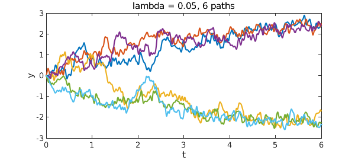
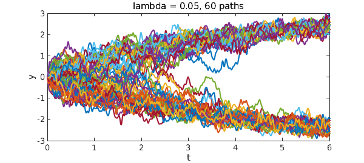

Consider the bistable equation $y' = ty - y^3 + f$, where $f$ is a random term of fixed amplitude. The fixed points of the deterministic part of the equation, locally at a time $t$, are $\pm |t|^{1/2}$. For small $t$, noise easily crosses this gap, but as $t$ gets larger any trajectory eventually settles down to a choice that is (almost surely) fixed forever. First we use $\lambda = 0.2$.
tic, dom = [0 6]; N = chebop(dom); rng(0)
N.lbc = 0; N.op = @(t,y) diff(y) - t*y + y^3;
for k = 1:6
f = randnfun(0.2,dom,'big');
y = N\f; plot(y), hold on
end
xlabel('t'), ylabel('y')
title('lambda = 0.2, 6 paths'), toc
Elapsed time is 2.513491 seconds.
Here's the same computation with $\lambda = 0.05$.
tic, clf
for k = 1:6
f = randnfun(0.05,dom,'big');
y = N\f; plot(y), hold on
end
xlabel('t'), ylabel('y')
title('lambda = 0.05, 6 paths'), toc
Elapsed time is 3.707869 seconds.

Here's a much bigger sample.
tic, clf
for k = 1:60
f = randnfun(0.05,dom,'big');
y = N\f; plot(y), hold on
end
xlabel('t'), ylabel('y')
title('lambda = 0.05, 60 paths'), toc
Elapsed time is 35.787353 seconds.
